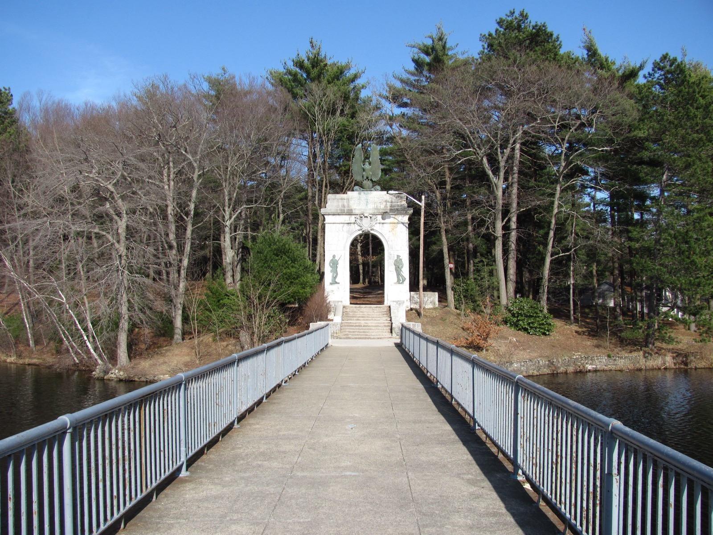
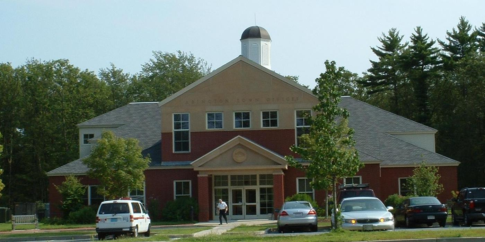

Independent community water quality initiative
We track EPA and MassDEP testing data for the Abington-Rockland Joint Water Works and help neighbors make sense of it — in plain language, sourced from public records.
Abington doesn't run its own water utility. It's a joint owner, alongside Rockland, of the Abington-Rockland Joint Water Works (ARJWW) — a single combined system, under one EPA/MassDEP public water system ID, governed by a Joint Board of Water Commissioners representing both towns. Three treatment plants (Myers Avenue in Abington, Hannigan in Rockland, and Great Sandy Bottom Pond in Pembroke) draw from four gravel-packed wells beneath Abington and two surface reservoirs, blending into one distribution network.
That shared structure means Abington and Rockland residents are, functionally, drinking the same water and reading the same test results — this isn't a wholesale-purchase arrangement like some neighboring towns have, it's genuine joint ownership. It also means Abington's most consequential water story of the last five years — a PFAS exceedance that triggered a $26 million treatment project — is really an Abington-Rockland story.
| Issue | What happened | Status |
|---|---|---|
| PFAS6 (combined) | 22.9 ppt at Hannigan source, Mar 2021; MCL exceedances again Q2–Q3 2024 | Hannigan plant: non-detect since Mar 2026. Myers Ave: pilot treatment, below limit, permanent system underway |
| TTHM / HAA5 (disinfection byproducts) | MCL violations, 2014–2015, tied to a low-flow sampling site | No recurrence reported since |
| Total coliform / E. coli | MCL violation, May 2025; boil-water order issued | Resolved within ~72 hours; all follow-up samples clear |
| Lead service lines | System-wide inventory, 2024 | No lead, galvanized-requiring-replacement, or unknown lines found |
Sources: MassDEP/EPA SDWIS violation records; Town of Abington and Rockland-MA.gov public notices; see the full breakdown with citations on the Water data page.


Abington Water Watch is a volunteer-run initiative started by residents who wanted a plain-language, independent source for what public testing actually shows about the water supplied by the Abington-Rockland Joint Water Works — separate from the utility's own reporting.
We read the public notices, follow the PFAS treatment construction as it happens, and track new MassDEP and EPA data as it's published, so neighbors don't have to piece it together from town press releases and legal-notice PDFs.
Request a free in-home water test and a volunteer will follow up to walk through what your results mean.
Get a free water test